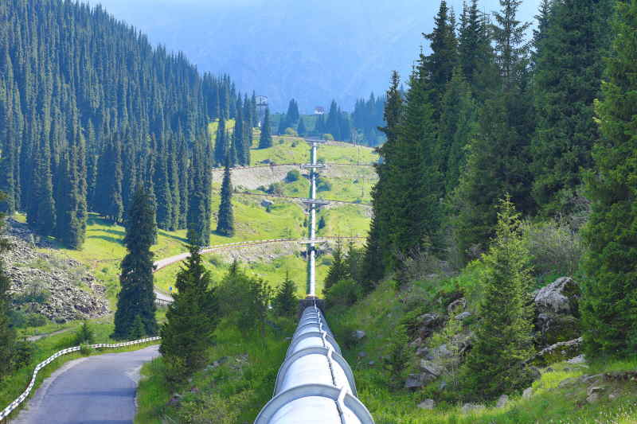
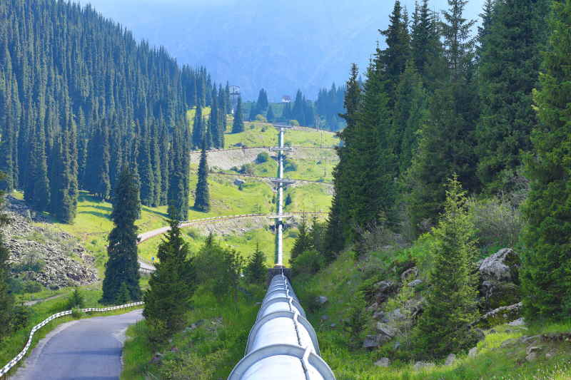
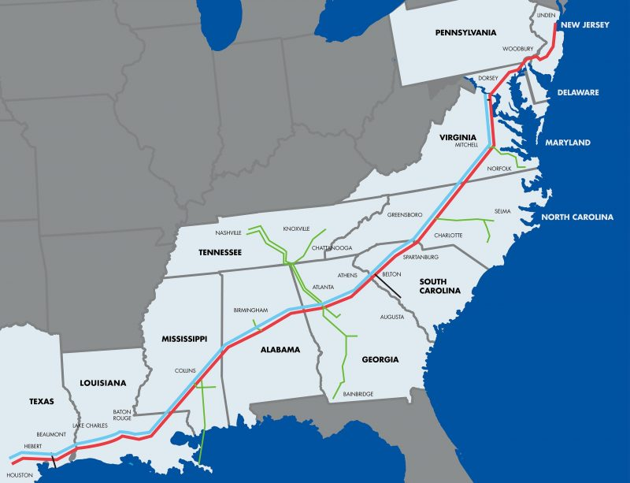
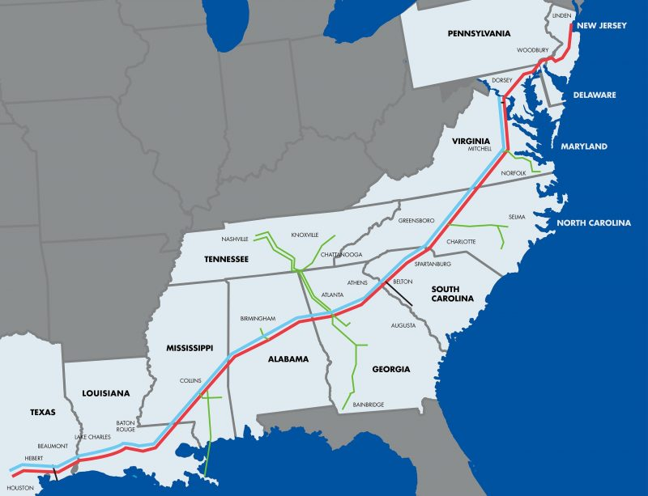

After gaining access to the system Darkside installed $4.4million in Bitcoin in exchange for a decryption key.The halting of daily operations had a vast impact on Colonial Co.'s financials and also led to a rise in fuel along the East Coast.
Due to the severity of the cyber attack on U.S. infrastructure, a fast response by the government occurred that would set the foundations for cybersecurity protocols and organizations not only in the United States but internationally.
After the attack Colonial Piple Co. was in contact wtih various govemrent agenceis and a prviate cyber security firm to restore access and recieve consultation on the best avaiable coruse of action.
Analyst drew a conclsuion that it would take too long to restore opreations, as the colonial pipeline was a vital part of East Coast infastructure.
Thus, the ransom was paid and operations was restored on May 12th 2021, five days after the attack had begun.

 


 
